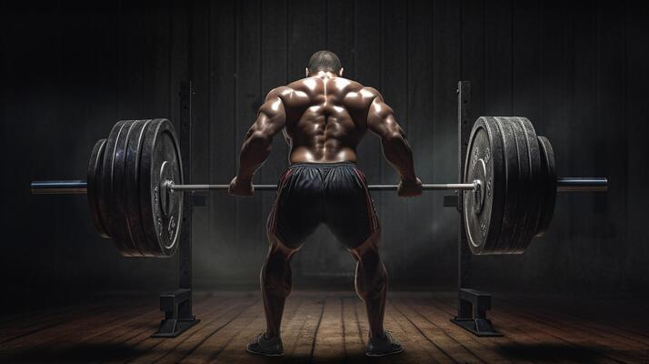

Smart Fit News>> Fitness>> A importância da alimentação pré e pós-treino
Invista no lanche certo e potencialize os resultados
do seu treino
24/08/2016-Tempo de leitura:3mins
Por:Redação
Você treina bastante e quase não vê resultados? Saiba que o
erro pode estar em sua alimentação! Não fazer um bom pré e
pós-treino, pode prejudicar tudo o que você conquistou até
agora. Mas calma que, com as refeições regra das, você vai
atingir o seu objetivo.
Manter uma boa alimentação é fundamental para quem pratica
exercícios físicos, isso porque o pré e pós-treino melhoram o
desempenho e previnem lesões.
Segundo a nutricionista Fúlvia Hazarabedian: “A alimentação
direcionada ao treino permite a melhora da performance, sendo
assim, a evolução de cargas, repetições e tempo de corrida
melhoram”.
Se você tem como objetivo perder peso ou aumentar a massa
muscular, os alimentos pré e pós-treino vão auxiliar esse
processo. O perfil da alimentação é ajustado conforme o
objetivo, perfil físico e necessidades [de cada um]. Desta forma,
o valor calórico e a distribuição de nutrientes é proporcional a
esses fatores”, explica Fúlvia.
Agora que você sabe a importância de se alimentar bem no
pré e no pós-trieno, entenda quais alimentos devem fazer parte
desses lanches (ou refeições) e quais as funções dele no seu
treino.
É o que dá energia para o seu corpo ANTES de praticar
exercícios físicos! O que você deve comer é o carboidrato, pois
ele vira glicose no organismo, o que gera energia e potencializa
o treino. A falta desse alimento para quem treina é prejudicial,
podendo afetar o treino e a saúde. Isso acontece porque, com a
falta de carboidrato no corpo, ele utiliza outros meios como
fonte de energia, como a proteína, o que pode fazer você perder
massa magra.
O que comer: Aveia, banana e batata doce são alguns
exemplos. E também os integrais, como pão, arroz e macarrão.
Essa é a hora em que você está cansado e chega em casa. Você
vai comer o que tiver pela frente, certo? Errado! A alimentação
pós-treino é importante para repor as energias gastas durante
os exercícios, fornecendo nutrientes para a recuperação
muscular DEPOIS do treino.
O que comer: Granola com iogurte, sanduíche com proteína ou
uma refeição completa como arroz, feijão, carne branca e salada.
Essas são algumas opções!
É importante manter uma dieta rica em nutrientes, proteínas
e carboidratos, mas dependendo de cada objetivo a
quantidade e proporção entre eles pode variar. Os exercícios
físicos combinados com uma boa alimentação e descanso
trazem muitos benefícios que vão melhorar seu corpo,
qualidade de vida e o rendimento nos treinos.
O alimento CERTO pode ajudar a diminuir a fadiga, preservar a
massa muscular e recuperar todo o organismo. Ah, e claro: Beba
bastante água.
Quer ter acesso a nutricionistas sem sair de casa? Acesse
o Smart Fit Nutri conheça todos os benefícios do programa
de acompanhamento nutricional da Smart Fit.
Um aplicativo de nutrição que pode ser usado mesmo por
quem ainda não é aluno da Smart Fit, sendo possível fazer
consulta nutricional e a medição de bioimpedância.